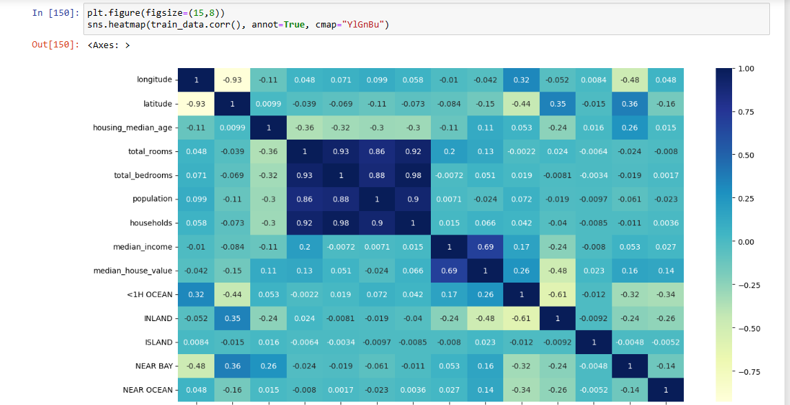
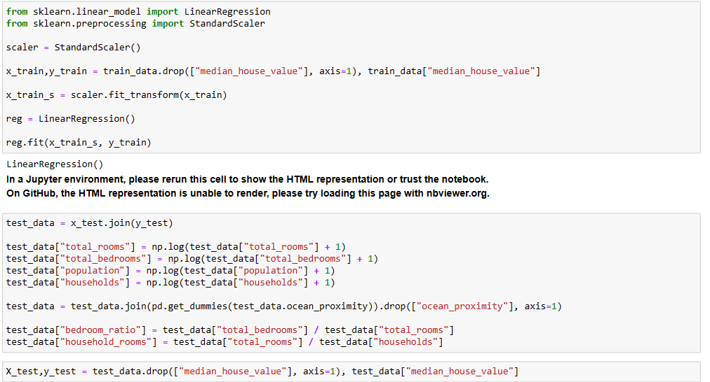
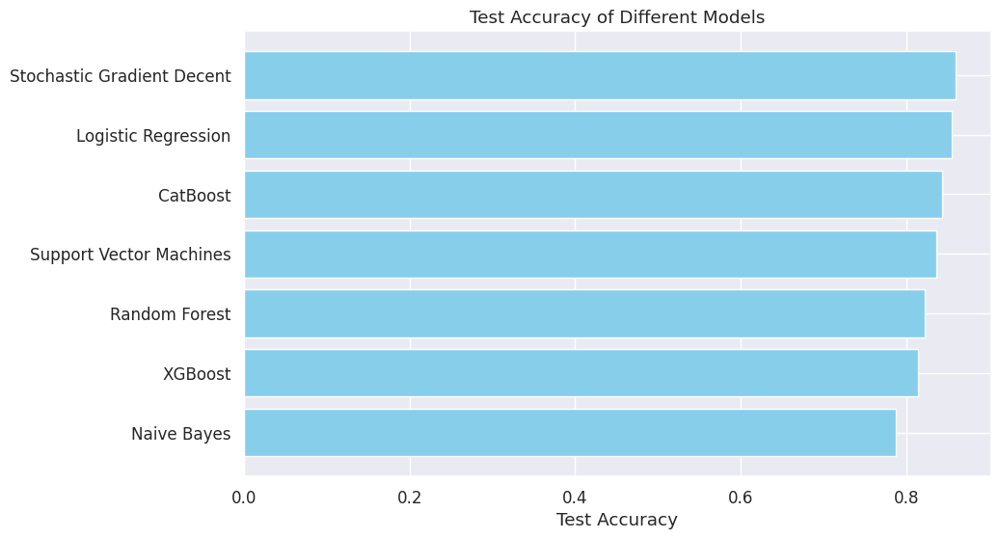

Latest Project



I'm machine learning engineer exprience for over 3 years.I'm Data analytics,I have completed numerous projects on platforms such as Fiverr and Upwork, specializing in data analysis and machine learning..
More About Me
I am a versatile professional with expertise in multiple domains, including machine learning engineering and data analysis. With a passion for creating impactful solutions, I specialize in developing robust machine learning models that address complex challenges. As a seasoned machine learning engineer, I am proficient in Python programming and various machine learning frameworks such as TensorFlow, PyTorch, and Scikit-learn. I thrive on turning data into actionable insights through predictive modeling, natural language processing, and algorithm development. In the realm of data analysis, I transform raw data into meaningful insights. Through statistical analysis, data visualization, and predictive modeling, I extract valuable information that informs strategic decision-making. By utilizing tools like pandas, NumPy, and matplotlib, I ensure that data-driven decisions are accurate and impactful. My expertise lies in not only building efficient machine learning models but also in interpreting and presenting data in a way that drives business growth and innovation.
More About Me
"Passionate web designer skilled in creating captivating user experiences through innovative design,
meticulous attention to detail
learn More
"Dedicated data analyst adept at uncovering insights from complex datasets,
employing statistical methods and data visualization
"Machine learning enthusiast skilled in designing and implementing predictive models,
harnessing data-driven solutions to solve
My name is Usman Ali.I'm Machine learning Engineer and Data Analyst extensive exprience for over 3 years, I have completed numerous projects on platforms such as Fiverr and Upwork, specializing in data analysis and machine learning. In these projects, I have employed advanced techniques such as Artificial Neural Networks (ANN) and Convolutional Neural Networks (CNN). These experiences have honed my skills in handling diverse types of data, conducting comprehensive analysis, and developing robust machine learning models. My tasks have included data preparation, feature engineering, model selection, hyperparameter tuning, and performance evaluation.